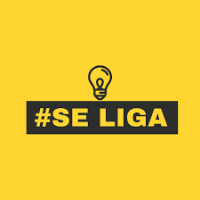

projeto se liga é um tipo de uma recuperação, só de quem em de ser de um trimestre so é dos trê
eu estou no se liga por que deixei a desejar nos estudos, faltei muitos dias e perdi umas provas
para nao ocorrer mais preciso focar mais nos estudos e focar no meu objetivo que é passar de ano
